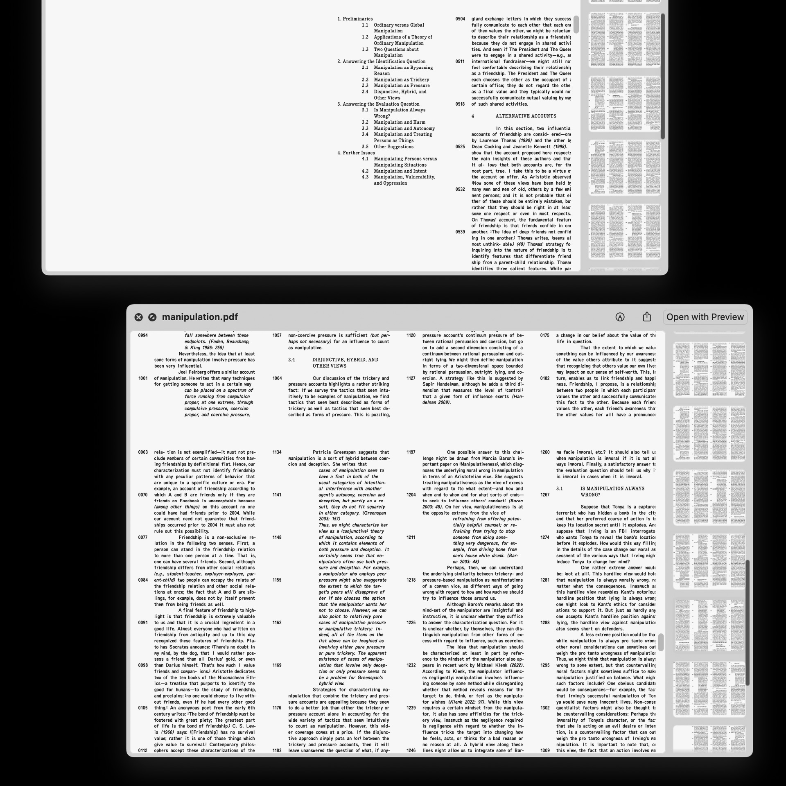
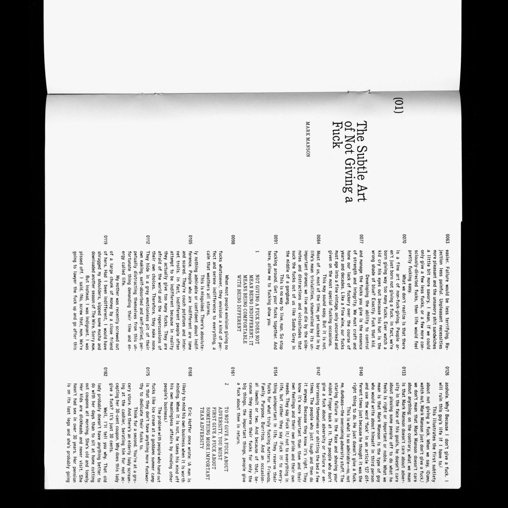
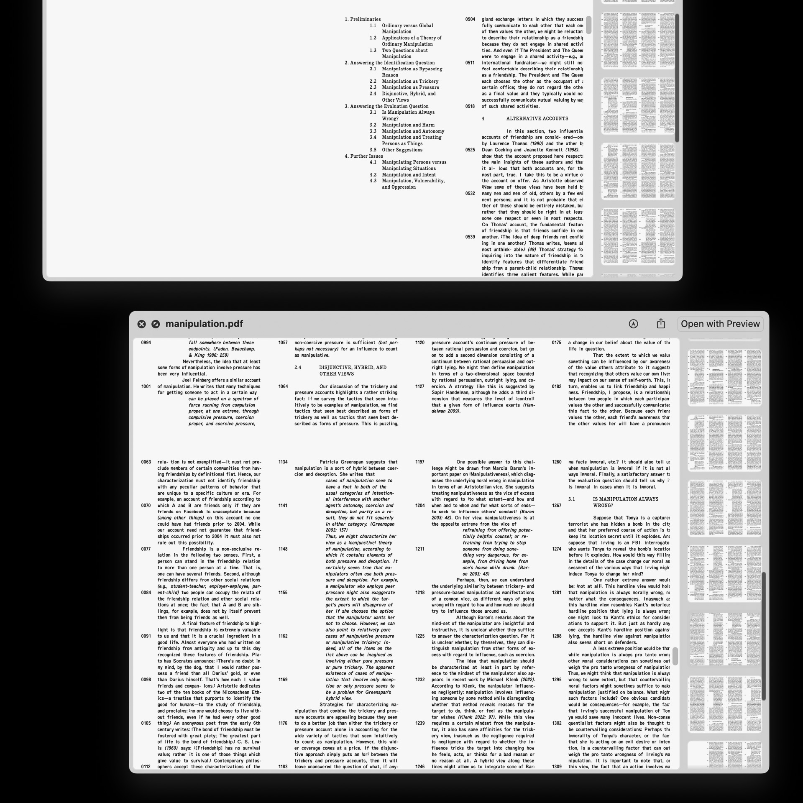
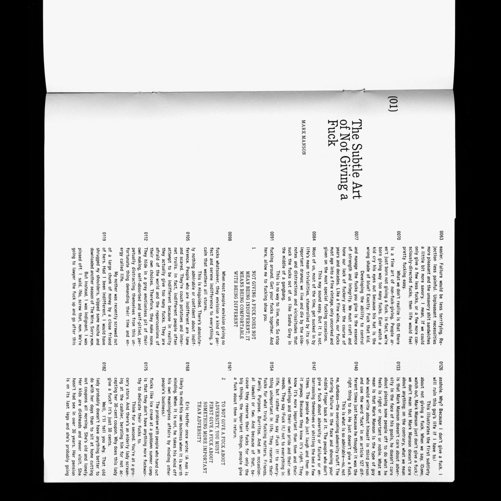
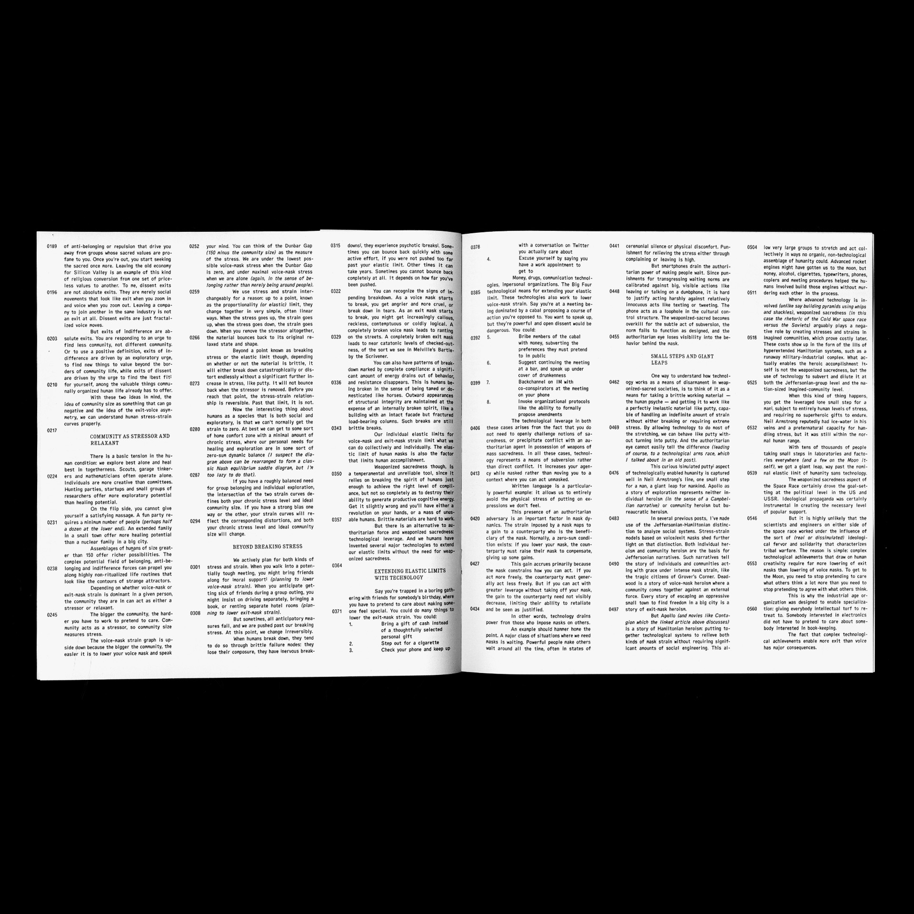
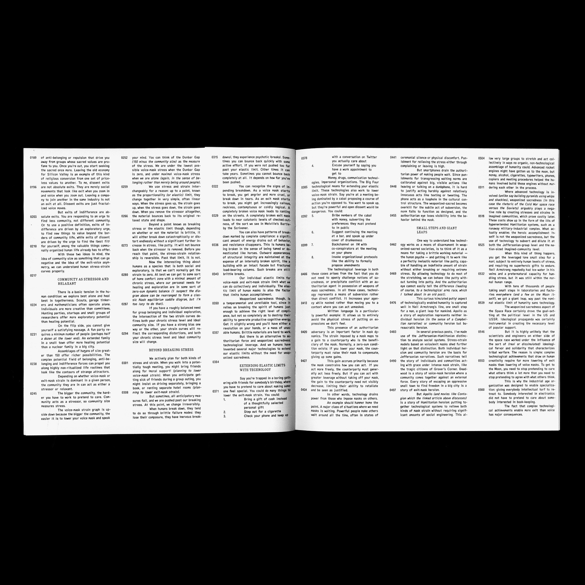

YOU ARE A GOOD FRIEND AND I WANT TO BE BETTER FOR YOU
in → Fall 2023
with → Jacek
fonts → ABC Oracle Triple, ITC Cushing
A short publication examining the nuances of communication, care, and control. Set in ABC Oracle Triple and ITC Cushing, the typography mirrors the structured yet erratic tension between rigidity and fluidity. Each featured article explores performativity and the boundaries of sincerity. A rigid, column-based typographic system—detailed with micro-type and numbered lines—reinforces a sense of surveillance and order.
 



 
